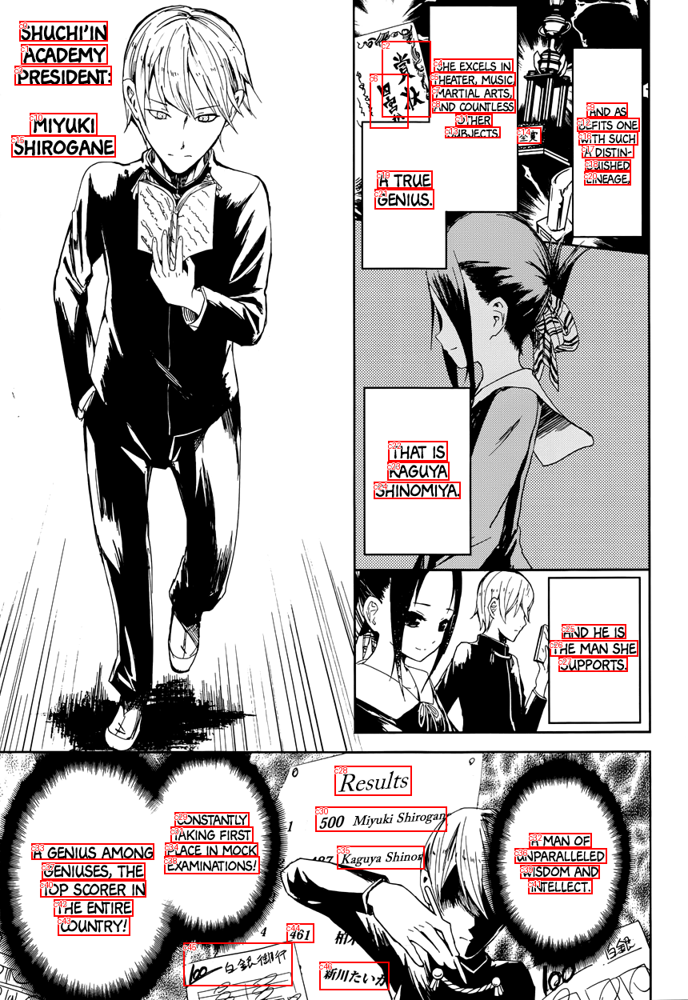
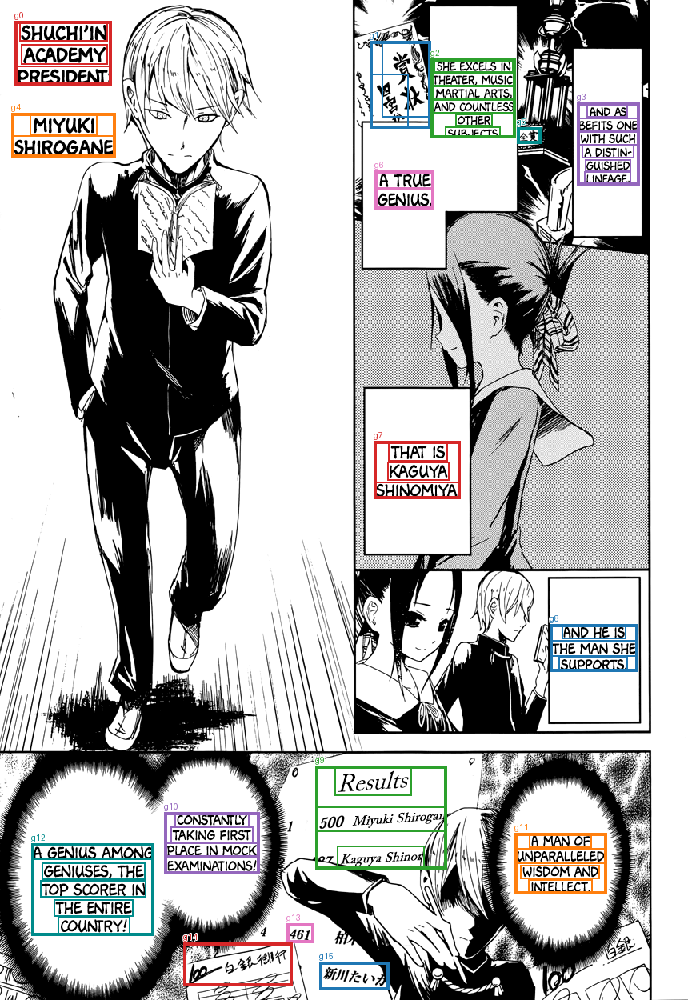

Saved TextExtractionPipeline groups, already filtered and joined. No OCR, filtering, or joining is run by diagnostics. References are comparison only; order is spatial.
Transcript TXT · All candidates and results JSON
SHUCHI'IN ACADEMY PRESIDENT: 賞状 四宫 SHE EXCELS IN THEATER, MUSIC, MARTIAL ARTS, AND COUNTLESS OTHER SUBJECTS. AND AS BEFITS ONE WITH SUCH A DISTIN- GUISHED LINEAGE, MIYUKI SHIROGANE 全赏 A TRUE GENIUS. THAT IS KAGUYA SHINOMIYA. AND HE IS THE MAN SHE SUPPORTS. Results 500Miyuki Shirogan Kaguya Shinos CONSTANTLY TAKING FIRST PLACE IN MOCK EXAMINATIONS! A MAN OF UNPARALLELED WISDOM AND INTELLECT. A GENIUS AMONG GENIUSES, THE TOP SCORER IN THE ENTIRE COUNTRY! 461 100一白银御行 新川たい


| Group | OCR IDs | Joined text | Target index | Reference text | Similarity |
|---|---|---|---|---|---|
| g0 | c0, c1, c3 | SHUCHI'IN ACADEMY PRESIDENT: | |||
| g1 | c2, c6 | 賞状 四宫 | |||
| g2 | c4, c5, c7, c8, c11, c13 | SHE EXCELS IN THEATER, MUSIC, MARTIAL ARTS, AND COUNTLESS OTHER SUBJECTS. | 1 | SHE EXCELS IN THEATER, MUSIC, MARTIAL ARTS, AND COUNTLESS OTHER SUBJECTS. A TRUE GENIUS. | 0.915 |
| g3 | c9, c12, c16, c17, c18, c20 | AND AS BEFITS ONE WITH SUCH A DISTIN- GUISHED LINEAGE, | 0 | AND AS BEFITS ONE WITH SUCH A DISTINGUISHED LINEAGE, | 1.0 |
| g4 | c10, c15 | MIYUKI SHIROGANE | |||
| g5 | c14 | 全赏 | |||
| g6 | c19, c21 | A TRUE GENIUS. | |||
| g7 | c22, c23, c24 | THAT IS KAGUYA SHINOMIYA. | 2 | THAT IS KAGUYA SHINOMIYA. | 1.0 |
| g8 | c25, c26, c27 | AND HE IS THE MAN SHE SUPPORTS. | 3 | AND HE IS THE MAN SHE SUPPORTS. | 1.0 |
| g9 | c28, c30, c35 | Results 500Miyuki Shirogan Kaguya Shinos | |||
| g10 | c29, c31, c34, c38 | CONSTANTLY TAKING FIRST PLACE IN MOCK EXAMINATIONS! | |||
| g11 | c32, c36, c39, c41 | A MAN OF UNPARALLELED WISDOM AND INTELLECT. | 4 | A MAN OF UNPARALLELED WISDOM AND INTELLECT. | 1.0 |
| g12 | c33, c37, c40, c42, c43 | A GENIUS AMONG GENIUSES, THE TOP SCORER IN THE ENTIRE COUNTRY! | 5 | CONSTANTLY TAKING FIRST PLACE IN MOCK EXAMINATIONS! A GENIUS AMONG GENIUSES, THE TOP SCORER IN THE ENTIRE COUNTRY! | 0.694 |
| g13 | c44 | 461 | |||
| g14 | c45 | 100一白银御行 | |||
| g15 | c46 | 新川たい |
[]
[]
[]
[
{
"id": "c0",
"text": "SHUCHI'IN",
"score": 0.9935225248336792,
"box": [
24.0,
26.0,
134.0,
51.0
]
},
{
"id": "c1",
"text": "ACADEMY",
"score": 0.9999613165855408,
"box": [
26.0,
55.0,
134.0,
80.0
]
},
{
"id": "c2",
"text": "賞状",
"score": 0.6109094023704529,
"box": [
477.0,
51.0,
538.0,
146.0
]
},
{
"id": "c3",
"text": "PRESIDENT:",
"score": 0.9996069669723511,
"box": [
18.0,
82.0,
139.0,
106.0
]
},
{
"id": "c4",
"text": "SHE EXCELS IN",
"score": 0.9997469186782837,
"box": [
542.0,
73.0,
641.0,
90.0
]
},
{
"id": "c5",
"text": "THEATER, MUSIC,",
"score": 0.9953124523162842,
"box": [
538.0,
90.0,
644.0,
107.0
]
},
{
"id": "c6",
"text": "四宫",
"score": 0.45454755425453186,
"box": [
462.0,
92.0,
510.0,
160.0
]
},
{
"id": "c7",
"text": "MARTIAL ARTS,",
"score": 0.9999402165412903,
"box": [
540.0,
107.0,
642.0,
124.0
]
},
{
"id": "c8",
"text": "AND COUNTLESS",
"score": 0.9999662041664124,
"box": [
540.0,
124.0,
644.0,
141.0
]
},
{
"id": "c9",
"text": "AND AS",
"score": 0.9990339875221252,
"box": [
733.0,
128.0,
784.0,
146.0
]
},
{
"id": "c10",
"text": "MIYUKI",
"score": 0.9998416900634766,
"box": [
37.0,
141.0,
121.0,
169.0
]
},
{
"id": "c11",
"text": "OTHER",
"score": 0.999987781047821,
"box": [
569.0,
142.0,
615.0,
157.0
]
},
{
"id": "c12",
"text": "BEFITS ONE",
"score": 0.9998854398727417,
"box": [
721.0,
147.0,
799.0,
164.0
]
},
{
"id": "c13",
"text": "SUBJECTS.",
"score": 0.9928368330001831,
"box": [
556.0,
158.0,
625.0,
172.0
]
},
{
"id": "c14",
"text": "全赏",
"score": 0.6141877770423889,
"box": [
646.0,
159.0,
676.0,
179.0
]
},
{
"id": "c15",
"text": "SHIROGANE",
"score": 0.9999866485595703,
"box": [
14.0,
169.0,
144.0,
196.0
]
},
{
"id": "c16",
"text": "WITH SUCH",
"score": 0.9994008541107178,
"box": [
723.0,
164.0,
797.0,
181.0
]
},
{
"id": "c17",
"text": "A DISTIN-",
"score": 0.9929208755493164,
"box": [
727.0,
180.0,
792.0,
197.0
]
},
{
"id": "c18",
"text": "GUISHED",
"score": 0.999714732170105,
"box": [
731.0,
199.0,
788.0,
213.0
]
},
{
"id": "c19",
"text": "A TRUE",
"score": 0.9952964782714844,
"box": [
471.0,
213.0,
540.0,
235.0
]
},
{
"id": "c20",
"text": "LINEAGE,",
"score": 0.999494731426239,
"box": [
730.0,
214.0,
788.0,
231.0
]
},
{
"id": "c21",
"text": "GENIUS.",
"score": 0.9999146461486816,
"box": [
468.0,
236.0,
542.0,
261.0
]
},
{
"id": "c22",
"text": "THAT IS",
"score": 0.9995746612548828,
"box": [
485.0,
551.0,
559.0,
576.0
]
},
{
"id": "c23",
"text": "KAGUYA",
"score": 0.9999915957450867,
"box": [
484.0,
577.0,
561.0,
600.0
]
},
{
"id": "c24",
"text": "SHINOMIYA.",
"score": 0.9999605417251587,
"box": [
467.0,
602.0,
575.0,
623.0
]
},
{
"id": "c25",
"text": "AND HE IS",
"score": 0.9759671688079834,
"box": [
702.0,
780.0,
782.0,
798.0
]
},
{
"id": "c26",
"text": "THE MAN SHE",
"score": 0.9997994899749756,
"box": [
687.0,
800.0,
797.0,
820.0
]
},
{
"id": "c27",
"text": "SUPPORTS.",
"score": 0.9999102354049683,
"box": [
698.0,
821.0,
784.0,
839.0
]
},
{
"id": "c28",
"text": "Results",
"score": 0.9999961853027344,
"box": [
418.0,
957.0,
514.0,
994.0
]
},
{
"id": "c29",
"text": "CONSTANTLY",
"score": 0.9999885559082031,
"box": [
218.0,
1015.0,
311.0,
1033.0
]
},
{
"id": "c30",
"text": "500Miyuki Shirogan",
"score": 0.9998824596405029,
"box": [
394.0,
1008.0,
558.0,
1039.0
]
},
{
"id": "c31",
"text": "TAKING FIRST",
"score": 0.9961743950843811,
"box": [
213.0,
1033.0,
316.0,
1053.0
]
},
{
"id": "c32",
"text": "A MAN OF",
"score": 0.9629456400871277,
"box": [
661.0,
1041.0,
739.0,
1059.0
]
},
{
"id": "c33",
"text": "A GENIUS AMONG",
"score": 0.9996437430381775,
"box": [
39.0,
1054.0,
192.0,
1074.0
]
},
{
"id": "c34",
"text": "PLACE IN MOCK",
"score": 0.9996436834335327,
"box": [
206.0,
1053.0,
322.0,
1070.0
]
},
{
"id": "c35",
"text": "Kaguya Shinos",
"score": 0.9658708572387695,
"box": [
421.0,
1057.0,
530.0,
1086.0
]
},
{
"id": "c36",
"text": "UNPARALLELED",
"score": 0.9999852180480957,
"box": [
643.0,
1060.0,
758.0,
1079.0
]
},
{
"id": "c37",
"text": "GENIUSES, THE",
"score": 0.9996281862258911,
"box": [
52.0,
1078.0,
181.0,
1099.0
]
},
{
"id": "c38",
"text": "EXAMINATIONS!",
"score": 0.9998945593833923,
"box": [
205.0,
1070.0,
324.0,
1092.0
]
},
{
"id": "c39",
"text": "WISDOM AND",
"score": 0.9998788833618164,
"box": [
650.0,
1081.0,
749.0,
1098.0
]
},
{
"id": "c40",
"text": "TOP SCORER IN",
"score": 0.999241828918457,
"box": [
50.0,
1100.0,
182.0,
1121.0
]
},
{
"id": "c41",
"text": "INTELLECT.",
"score": 0.9999381899833679,
"box": [
660.0,
1099.0,
740.0,
1117.0
]
},
{
"id": "c42",
"text": "THE ENTIRE",
"score": 0.9999234080314636,
"box": [
67.0,
1124.0,
166.0,
1145.0
]
},
{
"id": "c43",
"text": "COUNTRY!",
"score": 0.9998048543930054,
"box": [
72.0,
1145.0,
162.0,
1169.0
]
},
{
"id": "c44",
"text": "461",
"score": 0.9999954104423523,
"box": [
358.0,
1154.0,
392.0,
1178.0
]
},
{
"id": "c45",
"text": "100一白银御行",
"score": 0.8525617122650146,
"box": [
229.0,
1178.0,
365.0,
1232.0
]
},
{
"id": "c46",
"text": "新川たい",
"score": 0.9982538223266602,
"box": [
399.0,
1202.0,
486.0,
1237.0
]
}
]